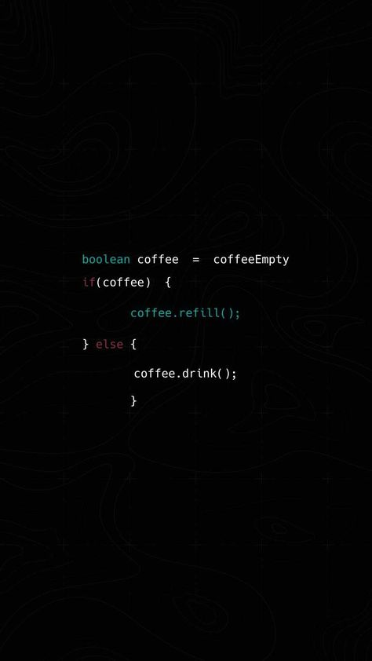
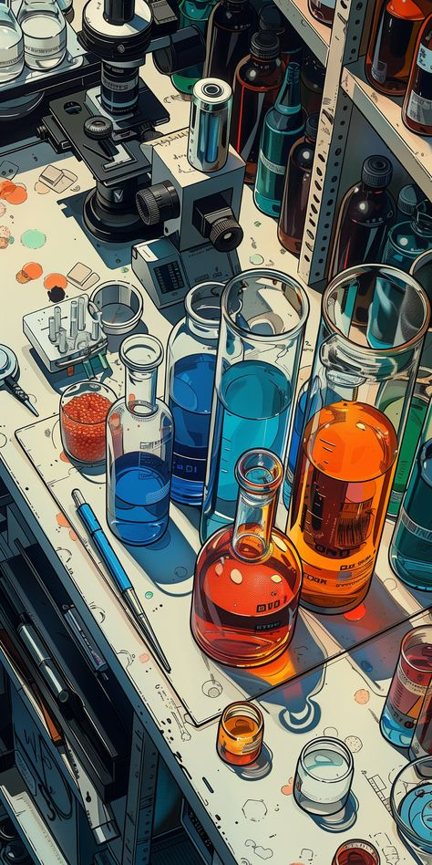

ITC aims to cultivate a culture of innovation by organizing workshops, competitions, and projects across diverse technical fields, enhancing collaboration and creativity among students.

HOME
The Institute Technical Council (ITC) at IIT Bombay fosters student innovation and technical skills, providing resources and guidance to bring ideas to life through various technical clubs, teams, and events.

EVENTS
ITC hosts numerous events, including the RC Plane Competition by the Aeromodelling Club, which engages over 400 students in designing and flying remote-controlled planes.